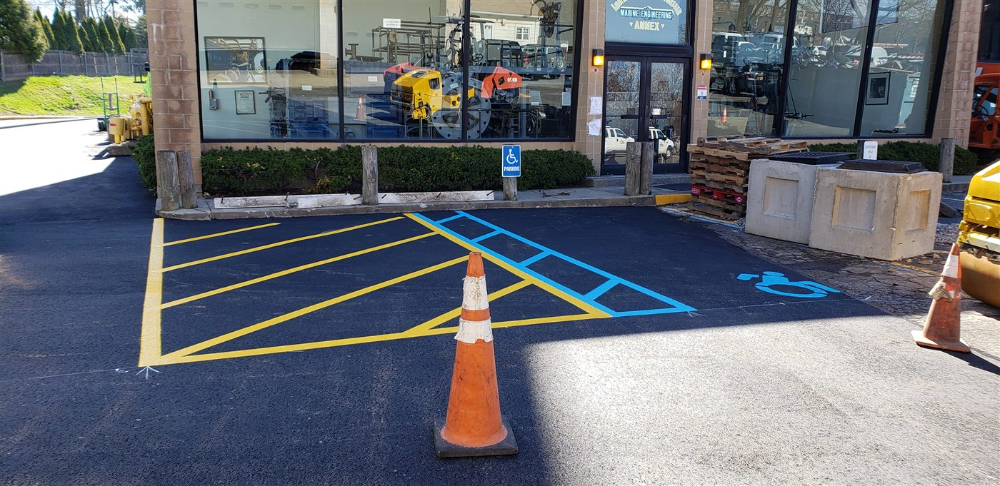
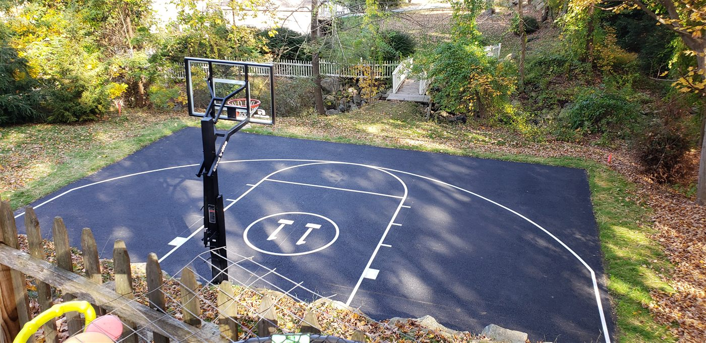
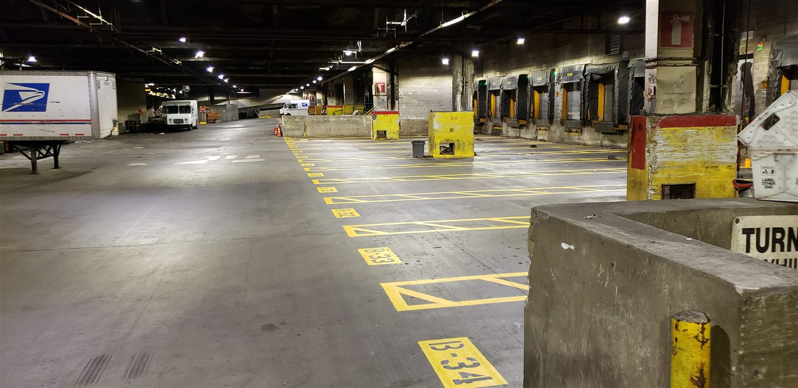

Think about the last parking lot you pulled into. Did you notice the lines? Probably not. But you followed them. You found your space, you opened your door without hitting the car beside you, you walked a path that kept you out of traffic. Every one of those decisions was guided by paint on asphalt. That is what we do. We build the system nobody sees.
My name is Mike, and I started Skyline Striping over eleven years ago on Long Island with one truck, one striper, and one belief: that the details people overlook are the details that matter most. A parking lot is the first and last thing every customer touches. It is the handshake before you ever open the door. And like any handshake, it either builds trust or breaks it.

More than paint
People assume striping is simple. Buy a machine, spray some paint, go home. But walk a job site with us and you will see something different. Before we ever touch a striper, we are reading the asphalt. How old is the surface? What is the traffic pattern? Where does water pool? Where do pedestrians cross? How wide does a fire lane need to be here versus there? Which ADA requirements apply to this municipality versus the one three miles east?
Every lot is a puzzle. And every line we lay is an answer to a question most people never think to ask.


"Amazing company! I used them for my commercial lot and they did an exceptional job! Mike the owner is a genuinely great guy! Use this company without hesitation." Shah Tehrany · Google Review · ★★★★★
The craft nobody talks about
There is a reason national brands trust us. Precision marking is not about having the right shade of yellow. It is about dimensional tolerances, retroreflective materials, surface preparation, and a zero error mentality that extends across every lot we touch. When we bring that standard to a shopping center or a corporate campus, the difference is visible from the moment you pull in.
We stripe basketball courts where the three point line has to be exactly 23 feet 9 inches at the arc and exactly 22 feet at the corner. We mark fire lanes where an extra inch of deviation could mean a failed inspection. We paint ADA spaces where the slope of the ground determines the placement of the access aisle, not the other way around.



This is not commodity work. This is spatial engineering with a paint gun.
A parking lot is the first handshake your business gives to every customer who walks through the door.
What happens when the lines fade
Here is something property managers learn the hard way: faded lines are not just ugly. They are expensive. When drivers cannot see where to park, they spread out. A lot designed for 200 cars suddenly holds 160. That is 40 lost customers per hour during peak times. Multiply that across a week, a month, a year. The cost of not restriping is always more than the cost of restriping. We break down the exact warning signs in when to restripe your parking lot.
Then there is liability. An unmarked crosswalk, a missing handicap symbol, a fire lane that is no longer visible. These are not cosmetic problems. They are legal exposure. We have walked onto properties where the owner had no idea they were out of ADA compliance until we showed them. One phone call to us could have saved them thousands in potential fines. If that is a worry, read our guide to parking lot ADA compliance in New York.
The night shift
Some of our best work happens when no one is watching. We get calls from business owners who cannot afford to lose a single parking space during the day. Restaurants, medical offices, retail centers. So we show up after closing time, set up under lights, and get to work. By the time the sun comes up, the lot is dry, the lines are sharp, and the first car of the morning pulls into a space that was not there twelve hours ago.

There is something about working at night that strips everything down to the essentials. No distractions. No traffic. Just the machine, the paint, and the line. It is where some of our cleanest work happens.
Why we do this
I will be honest. Nobody grows up dreaming of becoming a parking lot striper. But once you start, something hooks you. Maybe it is the before and after. Maybe it is pulling up to a lot that looks abandoned and driving away from one that looks brand new. Maybe it is the call from an owner two weeks later saying their customers noticed.
We have striped lots where the business was on the verge of closing and the fresh paint was part of a last effort to turn things around. We have marked courts where kids play every single day after school. We have laid down ADA spaces that gave someone in a wheelchair their first real access to a building they visit every week.


The lines are invisible infrastructure. You only notice them when they are gone. And making sure they are never gone. That is the job. That is the obsession. That is Skyline Striping.
We build the system nobody sees. And that is exactly how it should work.
YOUR LOT TELLS A STORY. LET'S MAKE IT A GOOD ONE.
Free estimates for parking lot striping, restriping, ADA compliance, and more across Long Island and NYC.